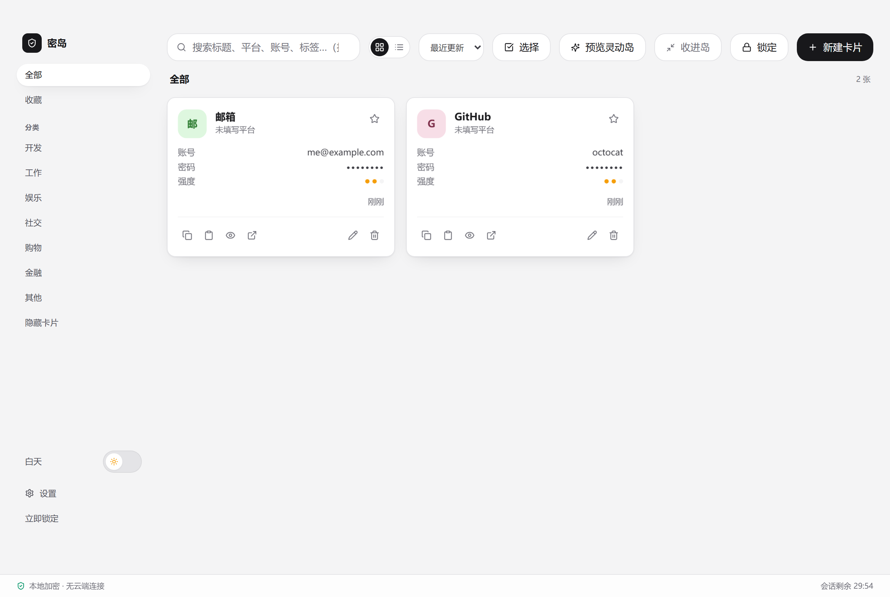
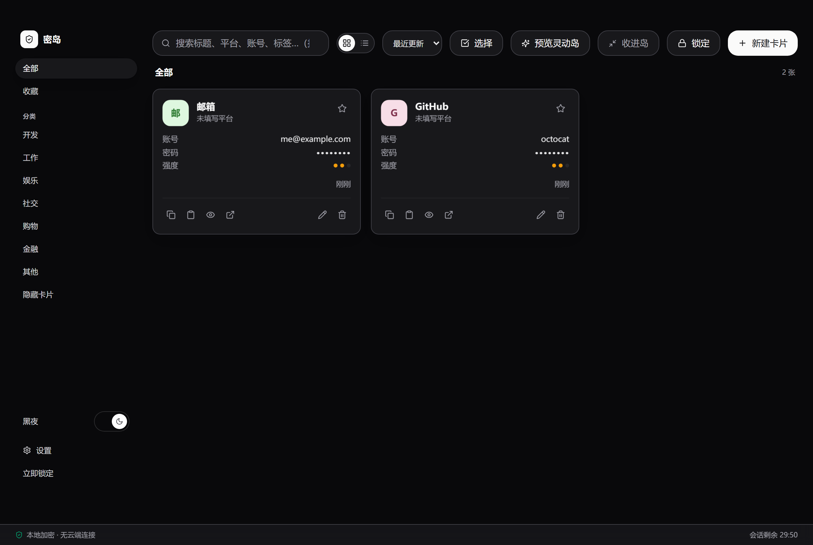

1关于本手册
这是一份面向使用者的手册：讲清楚「每个功能是什么」和「一步步怎么用」。
- 想看工程结构、构建与发版流程，请移步仓库根 README.md 与 app/README.md。
- 密岛是桌面程序（Windows 10 / 11，x64，需 WebView2 运行时）。通过浏览器打开的预览页只是演示，数据只留内存、重启即清空，禁止放真实数据。
2产品简介与安全模型
密岛把账号密码只保存在你自己电脑上，与「账号密码同步到厂商服务器」的工具不同：
- 没有云端账户：无需注册、邮箱或联网。
- 没有后门：数据用你的主密码在本地加密，开发者也无法打开。
- 没有网络请求：运行时不与任何服务器通信（「检查更新」默认是关闭的显式开关，且当前未接入）。
数据落盘方式：主密码经 Argon2id 派生密钥，条目以 SQLCipher（AES-256-GCM）逐条独立加密；解开库的密钥放在 Windows 凭据管理器（绑定当前用户）。不联网、不同步、不上传。
3安装与首次启动
3.1 两种发行文件
到 Releases 拿最新版：
| 文件 | 说明 |
|---|---|
KeyIsland_<版本>_x64-setup.exe | 安装包。装到 %LOCALAPPDATA%\KeyIsland，带开始菜单与卸载项（不需要管理员权限）。 |
keyisland.exe | 免安装单文件，双击即用（不写注册表、不建开始菜单）。 |
3.2 关于「未签名」提示
安装包没有做代码签名，首次运行 Windows SmartScreen 会提示「未知发布者」——点「更多信息」→「仍要运行」。想省掉这个提示只能去买签名证书。若安全软件拦截，请把密岛加入白名单，否则可能「图标一闪而过」（见第 16 节）。
3.3 首次启动向导
第一次打开进入设置向导，引导你创建保险库（见下一节）。
4创建你的保险库
向导分三步：
第 1 步 · 设置主密码
- 要求：至少 8 位，且包含以下四类中的至少两类：小写字母、大写字母、数字、符号。
- 下方有实时强度条（弱 / 中 / 强）。
第 2 步 · 密码提示（可选）
写一句只有你自己懂的提示，解锁时能看到。提示不能含密码本身，留空也可。
第 3 步 · 保存恢复码（最关键）
密岛生成一串 32 位恢复码（形如 XXXX-XXXX-XXXX-XXXX-XXXX-XXXX-XXXX-XXXX）。这一屏给你三件事：
- 复制恢复码；
- 下载
.kirk文件； - 勾选「我已离线保存」才能点「进入密岛」。
5主面板布局与日常使用
主面板三块：左侧导航（全部 / 收藏 / 分类 / 标签 / 隐藏卡片）、顶部工具条（搜索、网格⇄列表、排序、选择、预览灵动岛、锁定、新建）、卡片网格。
- 搜索：按 / 聚焦搜索框，输入即过滤。
- 卡片操作：收藏（☆）、复制账号 / 密码（默认 30 秒自动清空剪贴板）、按住预览密码（松开即隐藏）、打开链接、编辑、删除。右下角三色点表示密码强度（红弱 / 黄中 / 绿强）。
- 批量删除：选择模式勾选多张，删除需重输主密码。
- 状态条：左侧「本地加密 · 无云端连接」，右侧「会话剩余 X」。
- 主题开关：左侧导航底部有一个白天 / 黑夜切换（见第 6 节）。
6白天 / 黑夜主题
密岛提供两套外观：白天（浅色）与黑夜（深色）。
- 切换位置：主面板左侧导航最底部的滑动开关（一个会「拉伸回弹」的胶囊开关：白色圆钮滑过 24px，途中压成横向椭圆再弹回）。点一下即可在白天 ⇄ 黑夜之间切换。
- 默认跟随系统：首次打开时，密岛读取系统的「深色模式」偏好。系统深色 → 密岛深色；系统浅色 → 密岛浅色，不用你手动选。
- 一旦手动切换过，就记住你的选择：你只要拨动过一次开关，偏好会落盘保存，之后系统的变化不再覆盖你选的主题。若想回到「跟随系统」，在系统层面改回对应外观即可（手动选择后即以你的选择为准）。
- 灵动岛恒为深色：灵动岛（桌面常驻小岛）是独立的高对比度形态，不参与主题切换，始终深色，保证贴边常驻时清晰可读。


7新建 / 编辑一张密码卡片
| 字段 | 必填 | 说明 |
|---|---|---|
| 标题 | 必填 | 记录名，如"GitHub"。 |
| 平台 | 可选 | 显示在卡片副标题。 |
| 账号 | 必填 | 用户名 / 手机号 / 邮箱。 |
| 密码 | 新建必填 | 编辑留空=不改。 |
| 网址 | 可选 | 填了外链图标才能开网站。 |
| 本地应用目标 | 可选 | 桌面版一键启动；网页版只保存。 |
| 分类 | 可选 | 留空归「其他」。预设：开发/工作/娱乐/社交/购物/金融/其他。 |
| 标签 | 可选 | 逗号或顿号分隔，如 工作, 常用。 |
| 备注 | 可选 | 任意说明。 |
| 可见性 | 可选 | 见第 10 节。 |
内置密码生成器：长度 16 / 20 / 24 位，勾选小写/大写/数字/符号后「生成」。也可粘贴账号/密码——粘贴内容不自动显形、不进提示与日志。
8灵动岛与后台常驻
灵动岛是密岛的常驻小组件：建库并解锁后，你不用每次都打开大窗口，直接就能在灵动岛上搜索、看最近使用、快捷建卡、复制账号/密码、跳转——它是真正可用的，而不是只能看。
8.1 把主面板"收进"灵动岛（留在后台）
在完整主面板里，点窗口的关闭（×）或最小化（—），密岛不会退出，而是：
- 主面板缩成一个无边框、置顶的小岛贴在屏幕顶部（默认收起成一条，点一下展开）；
- 同时缩到系统托盘（任务栏不再显示密岛）。
这样密岛继续在后台运行，灵动岛始终可见、随时可点。首次"收进岛"会有一条轻提示告诉你如何彻底退出。
8.2 右键灵动岛，唤醒主面板
在灵动岛上点右键会弹出小菜单：
| 菜单项 | 作用 |
|---|---|
| 打开主面板 | 把小岛还原成完整窗口（也可点托盘图标）。 |
| 锁定保险库 | 立即锁定；已锁定时置灰（不摆假按钮）。 |
| 退出密岛 | 真正退出进程（退出前会先清空剪贴板与计时器）。 |
托盘图标左键 = 打开主面板；右键托盘菜单同样有「打开主面板 / 锁定保险库 / 退出密岛」。
8.3 主面板里也有灵动岛预览条
当你打开完整主面板时，顶部工具条仍带一个可收缩的灵动岛预览条：点一下展开，同样能搜索、建卡、复制——这是在主窗口内随手用的快捷入口，与"收进后台的小岛"是同一个功能的两处形态。
8.4 滚轮「滑动线」选择器（快速复制）
展开灵动岛后，在岛上滚动鼠标滚轮会唤出一条「滑动线」选择器，专门用来在不打开大窗口的情况下快速翻卡并复制：
| 操作 | 效果 |
|---|---|
| 滚轮向下 | 从第一张卡片开始，逐张往下翻 |
| 滚轮向上 | 从最后一张卡片开始，逐张往上翻 |
| Enter | 复制当前选中卡片的密码 |
| Shift + Enter | 复制当前选中卡片的账号 |
| 鼠标中键（按下滚轮） | 退出滑动线，回到灵动岛面板（见下） |
| Esc | 关闭滑动线，但不收起整个岛 |
9锁定 / 解锁 / 自动上锁
- 自动锁定：默认闲置 30 分钟；切后台或系统锁屏/休眠也会立即上锁（可在设置关闭）。
- 手动锁定：工具条点「锁定」。
- 解锁：输主密码；连错 2 次后出现「显示提示」；继续错进入冷却倒计时（期间禁用提交）；想不起密码点「忘记密码？」走恢复流程。
- 每次锁定显示原因（手动 / 超时 / 系统锁屏或切后台等）。
10四种隐私档位
| 档位 | 含义 |
|---|---|
| 普通 | 账号密码都可看可复制（默认）。 |
| 仅账号 | 列表显示账号，密码只能复制不可预览（预览禁用）。 |
| 隐藏 | 不进列表与搜索，需二次验证主密码才能访问。 |
| 遮罩 | 留列表但账号密码圆点遮住，验证主密码后才显示。 |
- 点「隐藏卡片」弹验证框，再输主密码；授权窗口 120 秒，到期自动退出并提示。
- 「遮罩」卡片点开也先验证，通过后临时显示，到期恢复。
- 输错主密码提示剩余可试次数。
11忘记主密码？用恢复码找回
- 解锁页点「忘记密码？」。
- 验证身份：输入 32 位恢复码（大小写/分隔符不敏感），或选/粘贴
.kirk内容。 - 设置新主密码：两次一致且强度达标。
- 完成后回到锁定态，用新主密码解锁。
轮换恢复密钥（怀疑泄露时）：设置里「重新生成恢复密钥」→ 先验主密码 → 旧码立即失效（无过渡期）→ 新码只出现一次，需重新离线保存并勾选确认。主密码不受影响。
12从 CSV 快速导入
CSV 导入适合把浏览器或其他密码工具导出的账号密码表格转换为密岛资产卡片。CSV 通常是明文文件，请只在可信设备上处理，并在导入确认后按你的安全策略删除临时文件。
- 在设置 → 备份与恢复 →「从 CSV 迁移」点击「下载 CSV 模板」。模板包含名称、平台、账号、密码、网址、本地应用目标、分类、标签、备注表头，不含示例密码。
- 用表格软件填写并另存为 CSV。名称、账号、密码为必填列；其他字段可留空。标签可用逗号、分号或顿号分隔。
- 点击「导入 CSV」并选择文件。密岛会按中英文表头自动识别字段，并预览可导入条目数与跳过行数；预览不会显示密码。
- 如果识别不正确，在「字段映射」中手动选择各字段对应列。名称、账号、密码必须分别映射到不同列；其他字段可设为「不导入」。调整后预览会同步更新。
- 检查预览后点击「导入」生成资产卡片。无法导入的行会显示行号和原因；跳过行报告不含账号或密码，可下载后用于修正源文件。
- 只新增，不覆盖：导入只会追加卡片，不会修改或删除已有卡片。
- 重复自动跳过：内容完全相同的卡片会被跳过，同一个 CSV 导入两次不会产生重复卡片；字段有任何差异则作为新卡片保留。
- 导入成功的提示会如实汇报新增数与跳过数，例如「已导入 8 张卡片，2 张已存在」。
13批量资产导出与导入
这项功能用于在不同保险库之间迁移卡片，与完整库备份不同。它只包含资产内容，不包含源库的密钥槽、恢复码、库设置或原始卡片 ID；导入时使用当前库密钥重新加密。
导出加密资产包（.kia）
- 在已解锁的主面板打开「设置」→「备份与恢复」→「资产批量迁移」。
- 输入当前库主密码。密岛会先验证密码，再生成加密资产包。
- 保存
keyisland-assets-YYYY-MM-DD.kia文件，并通过你信任的渠道传到目标设备。
.kia 文件经 Argon2id 密钥派生与 AES-256-GCM 加密；没有正确密码时不能读取其中资产。
在目标保险库中增量导入
- 目标设备先安装密岛、创建或打开目标保险库，并解锁。
- 设置 → 备份与恢复 → 资产批量迁移，选择
.kia文件。 - 输入导出时使用的主密码（源库主密码）；不要求与目标保险库主密码相同。
- 点击「预览导入结果」，查看文件资产总数、预计新增数与完全重复数。预览只读，不会写入目标库。
- 确认后点击「确认增量导入」。目标库会把资产用自己的密钥重新加密后新增。
- 完全相同的资产（字段内容及隐私/收藏状态一致）会跳过，避免重复。
- 其他卡片作为新卡片追加；即使同网站/账号但内容不同也保留。导入不会修改或删除现有卡片。
- 文件错误、密码错误或被篡改时，导入失败，目标库不发生变化。
.kia是迁移副本，不会自动同步。加密不等于可以公开分享；不要通过与文件相同的渠道传送密码。
14加密备份与恢复
导出（.kib）
- 设置 → 备份 → 「导出 .kib 文件」。
- 设置备份密码（可与主密码不同）。
- 下载
keyisland-YYYY-MM-DD.kib。 - 存到离线/另一处安全位置。
恢复需要两样同时具备：① 备份密码；② 对应的恢复密钥（
.kirk 或恢复码）。缺一不可。- 7 天未备份会有轻提示。
- 恢复：设置 → 导入备份，选
.kib+ 备份密码 +.kirk/恢复码。- 覆盖导入：完整替换当前库（换电脑/硬盘坏用）。
- 合并：只补"当前库没有"的条目，相同跳过，冲突保留当前；仅同密钥世系允许合并。
- 导入后回到锁定态，用主密码解锁。
15设置说明
| 设置项 | 说明 |
|---|---|
| 自动锁定档位 | 立即 / 5 分钟 / 30 分钟（默认）/ 4 小时 / 开机后。 |
| 剪贴板自动清空 | 默认 30 秒，可关/调；关闭后内容常留剪贴板。 |
| 防截屏 | 桌面版默认开；网页版置灰。 |
| 检查更新 | 当前版本无任何网络请求；网页版置灰，桌面版默认开但未启用联网。 |
| 数据文件位置 | 显示 vault.db 路径（默认 AppData\Roaming\KeyIsland），可"打开所在文件夹"；网页版显示"内存存储（未落盘）"。 |
| 操作日志/审计 | 记录复制、跳转、备份、恢复等（跳转只记域名不记令牌）。 |
| 上次备份 | 距上次导出天数，超 7 天提醒。 |
16快捷键与高效操作一览
| 位置 | 操作 | 效果 |
|---|---|---|
| 主面板 | / | 聚焦搜索框 |
| 主面板 | 按住卡片上的密码 | 临时显形，松开即隐藏 |
| 主面板 | 点 ☆ | 收藏 / 取消收藏 |
| 灵动岛 | 鼠标推到屏幕上沿 | 唤出收起的胶囊；点一下展开 |
| 灵动岛 | 滚轮向下 / 向上 | 唤出滑动线，从第一张 / 最后一张开始翻 |
| 滑动线 | Enter | 复制当前卡片密码 |
| 滑动线 | Shift + Enter | 复制当前卡片账号 |
| 滑动线 | 鼠标中键 | 退出滑动线，回到灵动岛面板 |
| 滑动线 | Esc | 关闭滑动线（不收岛） |
| 灵动岛 | 右键 | 打开主面板 / 锁定 / 退出 |
| 主面板 | 左导航底部开关 | 白天 ⇄ 黑夜主题 |
17安全须知与常见疑问
数据存在哪：只存本机 vault.db；主密码经 Argon2id 派生密钥，条目 AES-256-GCM 逐条独立加密；解开库的密钥放 Windows 凭据管理器（绑定当前用户）；不联网、不同步、不上传。
- Q：换电脑/重装还能开吗？ 密钥绑定原 Windows 用户。换用户/重装后凭据丢失，数据在但打不开 → 换回原用户，或用
.kib覆盖导入。务必做备份。 - Q：能放 OneDrive/坚果云同步吗？ 不建议，同步盘可能锁住
vault.db致打不开。备份的.kib（独立已加密文件）可放同步盘。 - Q：会偷偷联网吗？ 不会。程序本身无网络请求，检查更新也未启用。
- Q：主密码和恢复码哪个重要？ 同等重要。忘主密码可用恢复码找回；都丢则无解。请分别离线保存。
- Q：主题切换会动到我的数据吗？ 不会，主题只改外观。灵动岛始终深色，不受切换影响。
18启动失败排查
双击无反应或弹"启动失败"页，会中文说明原因并给三步操作：
| 现象 | 含义与对策 |
|---|---|
| 数据在但密钥不在 | 凭据管理器密钥丢了（换用户/重装/清理工具）。对策：换回原用户；或用 .kib 覆盖导入；确认无法找回则把 vault.db 改名留档再重建。 |
| 无法访问凭据管理器 | 读不到密钥，数据无损。对策：用原用户登录；查 KeyIsland 条目；重启。 |
| 无法创建数据目录 | 空间不足/权限限制/安全软件拦截。对策：清空间/加白名单/打开文件夹确认可写。 |
| 无法打开数据库 | 另一进程占用/同步盘锁/损坏。对策：结束多余进程；暂停同步盘；先复制 vault.db 留档。 |
启动失败页提供「打开数据文件夹」与「重试」。先复制重要文件留档，再按提示操作。